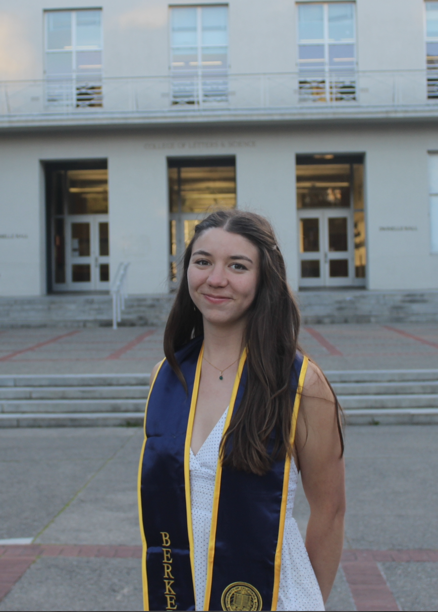

Ella Stoneman
Documentary Filmmaker.
Shoots, directs, edits, and scores documentary work, raised on California's Central Coast, based in the Bay Area,.
Directed & Produced
Other Contributions
Sound and scoring-- my work as a composer, sound recordist, and boom operator.
Short-Form & Branded Work
Vertical video made for social media — short form content incorpating individual brand voice.

About
Ella Stoneman is from the Central Coast, where she grew up playing music and performing with her dad's band. Her background in music has shaped her filmmaking — she has scored several short films and is drawn to musical subjects. Her most recent documentary follows the Singing Resistance movement, a community using music as peaceful protest against ICE. As a recent graduate of UC Berkeley, she hopes to stay in the Bay Area and continue to highlight people's stories.